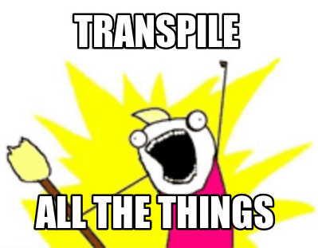
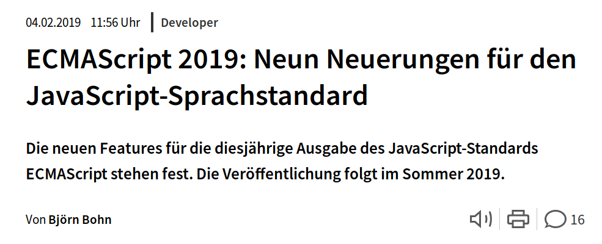

ECMAScript as an evolving language
About me
- Lenz Weber (@phry on Twitter, phryneas everywhere else)
- Developer at

- Working in professional web development since 15 years
- In love with the Web, Open Source, Linux and Security
- Just getting used to conference speaking, so bear with me
Let's get started
ECMAScript? JavaScript!
- ECMAScript is the specification behind JavaScript - the baseline every engine should support
- additionally, for front-end development, the WhatWG DOM Living Standard describes APIs that can be used for DOM manipulation
A short History of ECMAScript
- 1997-1999, ECMAScript 1-3 were released
And a look at the browser
(getting a real history here is almost impossible, so take these examples)
- Element.querySelector() started being supported ~2009
- Element.classList() started being supported ~2012
- fetch as a unified API for XHR Requests is supported since 2015-2017 (no IE)
All those things were always possible - but differed from browser to browser.
So... 1999 to 2015...
- Many features were not available cross-browser
- Two types of libraries started surfacing, hiding the browser-specific implementations:
- DOM manipulation (e.g. jquery, mootools), making up for missing DOM manipluation functionality
- Utility (e.g. underscore, lodash, mootools, jquery) to provide ease-of-use where the language was lacking
Then the Standards caught up and browsers started converging (and became evergreen!)
Today, you don't need those libraries any more. Modern browsers support everything we talked about.
Well, except IE11. But for that, we have polyfills. 🎆
What is a polyfill?
A polyfill detects if a browser supports a feature like window.fetch, and if that is missing, shims an alternative implementation in place of the original functionality.
Side Note: PonyFills
A ponyfill acts like a polyfill, but does not inject itself in place of a missing functionality, but exports either the original implementation or a shim.
This is much less disruptive - if you have the choice, prefer ponyfills to polyfills.
All our problems are solved
...and they lived happily every after ...
👸👸/🤴👸/🤴🤴 -> 🦄 -> 🌈
Okay, I lied
You can polyfill missing functions, but you can't polyfill unsupported syntax.
So... let's transpile.
The idea behind it:
- Write ES ≥ 6
- Use a transpiler to convert it into ES5 (or even ES3)
- If you want to get fancy: to every browser, ship a form of ECMAScript it is compatible with
- add Polyfills for old browsers where necessary
We write this
And IE11 gets this
a state machine
So...
We have found ways to use modern standards in all browsers (at some cost, but that's unavoidable)
Why should we stop here?
Languages that extend JavaScript with a type system
TypeScript
Reads & writes like JavaScript, but has a powerful type system
Completely different languages
Clojure
Can be run in the JVM or transpiled to JavaScript
Reason
OCaml dicalect that transpiles to JavaScript
New syntax to write JavaScript
JSX
a way of writing JavaScript that looks shockingly like HTML
transpiles to
Use JSNext
(or: ECMAScript as an evolving language)
We can also write Syntax that isn't even part of any standard yet!
The ECMA TC39
- The committee that decides on new ECMAScript features
- Accepts minor suggestions as PR/Issue on github
- New feature Proposals are developed in separate GitHub repositories and go through 4 stages
The way of a Proposal
- Document your problem & solution/suggestion
- Discuss it with the community
- Find a TC39 member that will act as Champion for your proposals
- Go through the four stages: Proposal, Draft, Candidate, Finished
Using a Proposal today
- Find an interesting proposal at https://github.com/tc39/proposals
- Stage 2 proposals usually come with ready-to-use transpiler plugins
- Just use it
- If you have issues or suggestions: join the discussion 💖
an example from the decorator proposal
the pipeline proposal
combined with the partial application proposal
What this means for Developers:
- You really should be learning ES6 by now
- And then probably some TypeScript or Flow
- Choose your own Adventure with ESNext ;)
Are all problems solved now?
Almost.
You won't be able to polyfill or transpile real "Browser" features like multithreading using WebWorkers.
Addendum
Source: heise.de
- Array<F>.prototype.flatMap<T>(callback: (elem: F, idx: number): T[]): T[]
- Array<F | F[]>.prototype.
flattensmooshflat(): F[] - String.prototype.trimStart(): string
- String.prototype.trimEnd(): string
- Symbol.prototype.description: string
- try {} catch {} without having to receive the error
- Array.prototype.sort is now stable!
- better handling of UTF-16 in JSON.stringify
Time for Questions & Discussion
By the way...
We are hiring!
(talk to me)